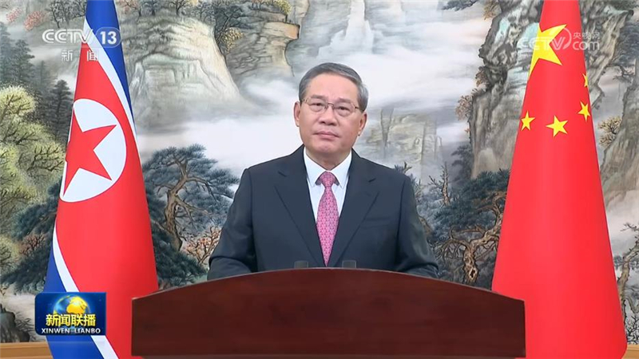
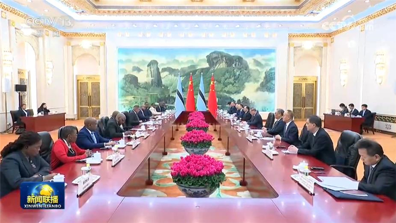
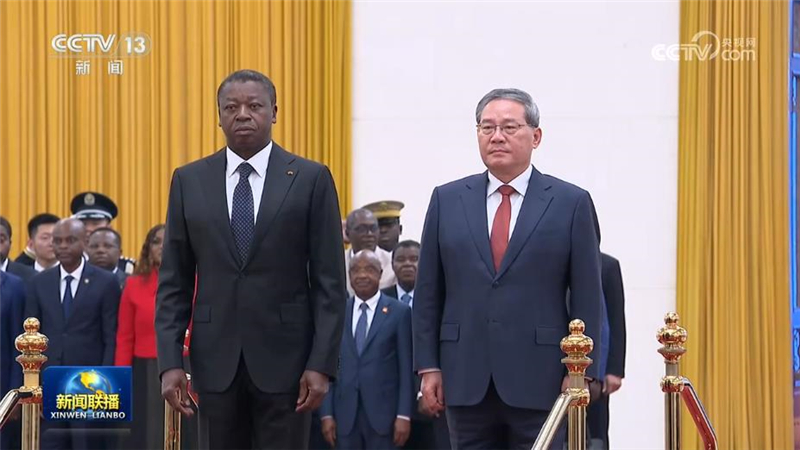
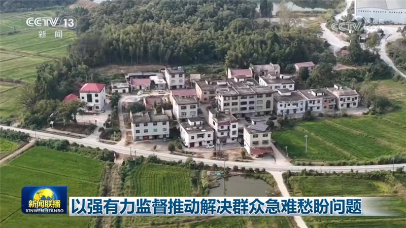
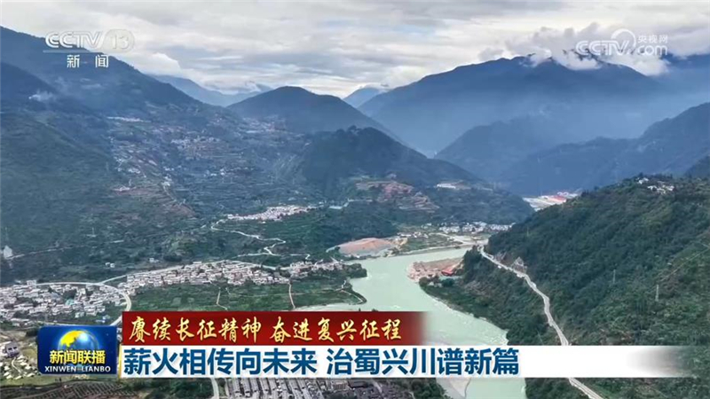
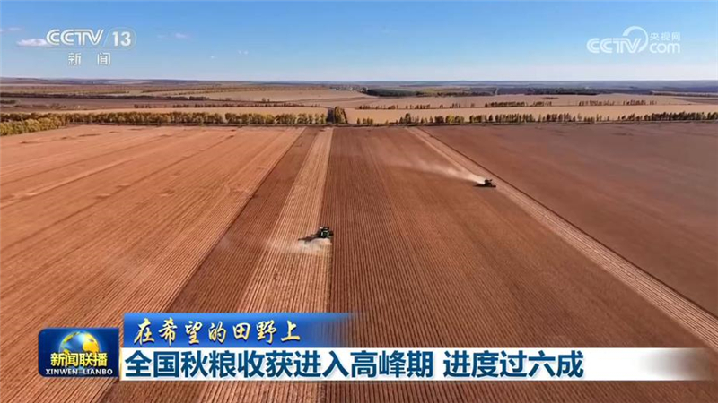
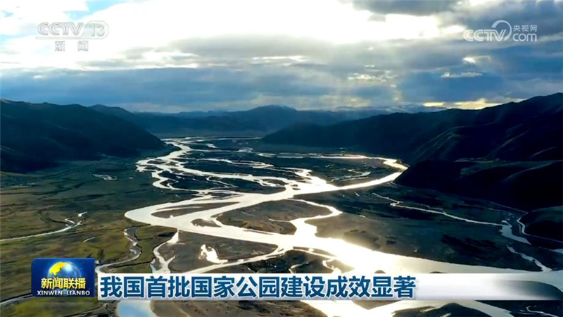
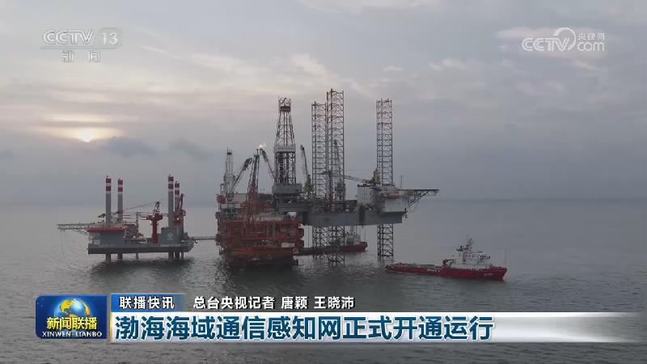
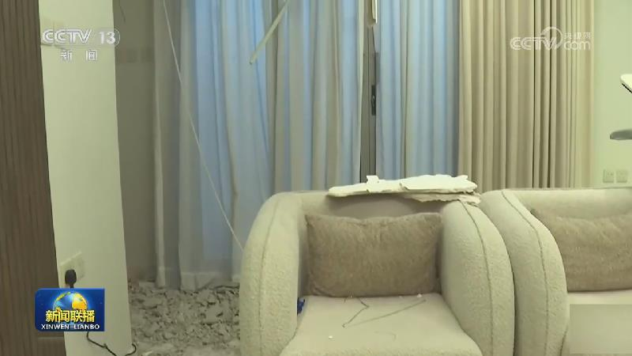
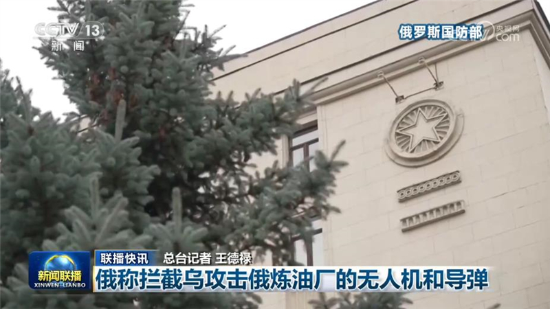

01
建成均衡普惠、优质高效的健康中国——习近平总书记重要讲话激励广大卫生与健康工作者履职尽责、担当作为
人民健康是民族昌盛和国家强盛的重要标志。习近平总书记在全国卫生与健康大会上发表重要讲话强调，要把保障人民健康融入各项政策，体现到各方面工作之中。总书记的重要讲话在广大卫生与健康工作者中持续引发热烈反响。大家表示，要把殷殷嘱托化为实干担当，坚定不移走中国特色卫生与健康发展道路，确保“十五五”时期健康中国建设取得决定性进展。

人民健康是民族昌盛和国家强盛的重要标志。习近平总书记在全国卫生与健康大会上发表重要讲话强调，要把保障人民健康融入各项政策，体现到各方面工作之中。总书记的重要讲话在广大卫生与健康工作者中持续引发热烈反响。大家表示，要把殷殷嘱托化为实干担当，坚定不移走中国特色卫生与健康发展道路，确保“十五五”时期健康中国建设取得决定性进展。

国务院总理李强15日在中朝新鸭绿江大桥开通仪式上发表视频致辞。李强在致辞中表示，中朝新鸭绿江大桥是习近平总书记和金正恩总书记共同关心推动的重要项目。大桥顺利开通，必将成为象征中朝友谊的新地标。希望双方持续优化口岸通关，提升互联互通水平，挖掘边境合作潜力，不断增进两国人民福祉。

国务院总理李强15日在京会见来华进行国事访问的博茨瓦纳总统博科。李强表示，中国和博茨瓦纳传统友谊深厚。前天（10月13日），习近平主席同总统先生举行会晤，就深化两国关系擘画了新的蓝图。中方愿同博方一道，遵循两国元首战略引领，进一步巩固政治互信，坚定相互支持，高质量共建“一带一路”，加强矿业、数字、绿色、人文等领域合作，共同促进发展振兴。……

15日下午，国务院总理李强在北京人民大会堂举行仪式，欢迎多哥部长会议主席福雷对我国进行正式访问。
欢迎仪式后，李强同福雷举行会谈。李强表示，近年来，在两国领导人战略引领下，中多关系不断迈上新台阶。习近平主席同福雷主席前天（10月13日）举行会晤，将双边关系定位提升为新时代中多命运共同体，就拓展两国合作作出新的规划。无论国际风云如何变幻，中国愿同多哥始终做相互信赖的好兄弟、好伙伴，弘扬传统友谊，筑牢政治互信，深化各领域合作，更好服务两国现代化建设。
应乌兹别克斯坦共和国总理阿里波夫邀请，国务院总理李强将于10月17日至18日对乌兹别克斯坦进行正式访问。

群众期盼处，就是正风肃纪反腐发力点。自2024年开始，按照党中央部署，中央纪委国家监委在全国开展群众身边不正之风和腐败问题集中整治，紧盯群众最关心、最直接、最现实的利益问题一抓三年，集中时间、集中精力、集中力量，超常规大纵深推进，让群众切实感受到问题有人管、困难有人帮、利益有人护。

红军在四川境内活动时间久、转战地域广、经典战役战斗密集，历经极为严酷的自然环境考验，书写了民族团结同心的篇章。如今，巴蜀大地赓续红色血脉，把红色资源转化为发展动能，推动新时代治蜀兴川再上新台阶。

农业农村部最新农情调度显示，目前全国秋粮收获进入高峰期，进度过六成。东北地区秋粮面积、产量占全国秋粮近四成，今年东北大部分地区秋粮生育期内气象条件总体有利，利于籽粒灌浆和安全成熟，产量形势较好。在黑龙江北大荒八五六农场260亩大豆单产提升田块，专家组开展实收测产，得出平均亩产683.63斤的好成绩，刷新黑龙江大豆百亩生产田高产纪录。

记者从国家林业和草原局了解到，首批五个国家公园设立五年来，中国特色国家公园制度体系基本建成，生态系统质量和旗舰物种数量实现提升。

第三轮第七批中央生态环境保护督察全部实现督察进驻

也门胡塞武装14日称，沙特阿拉伯主导的多国联军当天对也门首都萨那、塔伊兹省、荷台达省等多地发动了42次空袭。该武装当天再次使用弹道导弹袭击了位于沙特首都利雅得的哈立德国王国际机场。也门胡塞武装当天还公布了在曼德海峡附近与也门政府军作战的画面，称其仍控制曼德海峡。
据国际海事组织数据，截至14日，本月已有22艘船只在霍尔木兹海峡及周边海域遭遇袭击等事件。新加坡海事及港务管理局14日表示，13日以来，两艘在新加坡注册的集装箱船在通过霍尔木兹海峡时被不明投射物击中，一艘着火后沉没，另一艘船体受损。目前暂无人员伤亡报告。同一天，伊朗伊斯兰革命卫队称，一艘载有2500个集装箱的货轮当天试图通过霍尔木兹海峡未经授权的危险航道，在触雷后爆炸起火并沉没。……

俄称拦截乌攻击俄炼油厂的无人机和导弹